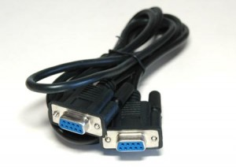

Иногда возникает необходимость соединить два старых компьютера в сеть, не имея под рукой никакого сетевого оборудования. Можно ли это сделать? Да, если на обеих компьютерах имеются COM-порты и запущен Linux. Причем Linux может быть не установлен, а просто запущен с Live-CD образа. Приведенный в данной статье способ создает вертуальный сетевой адаптер, работающий через COM-порт, и между компьютерами устанавливается полноценное сетевое соединение. Каждый компьютер получает свой IP-адрес, и все сетевые программы работают так, как будто компьютеры оборудованы полноценными сетевыми карточками.

Нуль-модемный кабель мама-мама
Единственно ограничение данного метода - скорость соединения. COM-порт - достаточно медленное устройство по современным меркам. Но если нужно поработать в текстовом терминале, передавая команды или небольшие файлы, то соединение по COM-порту может сильно помочь.
Здесь не будет рассказываться о том, как спаять кабель для соединения по COM-порту. Проверенные схемы даны в следующей статье: Распиновка кабеля для соединения по COM-порту. Или можно купить готовый. При покупке следует понимать, что распайка внутри может быть совсем не нуль-модемная. Поэтому лучше покупать провод с разбирающимися, а не литыми, коннекторами, чтобы при необходимости их можно было перепаять.
Определение COM-портов на компьютере с Linux
Для начала нужно выяснить, как COM-порты компьютера видятся в системе. Если это настоящие COM-порты (а не COM-преобразователь, воткнутый в USB), то выяснить их неличие можно следующей командой (от рута):
> dmesg | grep tty
[0.000000] console [tty0] enabled
[0.738204] 00:05: ttyS0 at I/O 0x3f8 (irq = 4, base_baud = 115200) is a 16550A
[0.761912] 0000:04:01.0: ttyS4 at I/O 0xd030 (irq = 18, base_baud = 115200) is a ST16650V2
[0.784281] 0000:04:01.1: ttyS5 at I/O 0xd020 (irq = 19, base_baud = 115200) is a ST16650V2
[3.804596] systemd[1]: Created slice system-getty.slice.
В этом выводе видно три COM-порта. Порт ttyS0 - это порт, расположенный непосредственно на материнке. Порты ttyS4 и ttyS5 - это порты с платы расширения.
Если же используется адаптер COM-порта через USB, то вначале нужно понять что это за устройство через команду:
> lsusb
...
Bus 003 Device 081: ID 067b:2303 Prolific Technology, Inc. PL2303 Serial Port / Mobile Action MA-8910P
...
После чего его так же можно поискать в dmesg либо по характерным частям названия, либо тоже с помощью подстроки "tty":
> dmesg | grep tty
[11310.118826] usb 3-4.1: pl2303 converter now attached to ttyUSB0
> dmesg | grep 2303
[11310.084263] usb 3-4.1: New USB device found, idVendor=067b, idProduct=2303, bcdDevice= 3.00
[11310.117607] usbcore: registered new interface driver pl2303
[11310.117612] usbserial: USB Serial support registered for pl2303
[11310.117626] pl2303 3-4.1:1.0: pl2303 converter detected
[11310.118826] usb 3-4.1: pl2303 converter now attached to ttyUSB0
Здесь видно, что последовательный интерфейс обозначается как ttyUSB0. Этот интерфейс работает полность как последовательный COM-порт.
Проверка физического соединения
Далее, чтобы убедиться, что проводное соединение вообще работает, можно на обеих компьютерах запустить программу терминала minicom. Например, если первый компьютер использует интерфейс ttyS5, а второй ttyUSB0, то команды будут следующие.
На первом компьютере:
minicom -D /dev/ttyS5
На втором компьютере:
minicom -D /dev/ttyUSB0
Если появляется ошибка
minicom: невозможно открыть /dev/ttySxx: Отказано в доступе
то нужно либо запустить minicom от рута, либо добавить текущего пользователя в группу, к которой принадлежит файл устройства:
> ls -la /dev/ttyS5
crw-rw---- 1 root dialout 188, 0 апр 13 11:36 /dev/ttyS5
В данном случае используется группа dialout, именно в нее нужно добавить пользователя. В некоторых дистрибутивах данная группа может называться modem или еще как-нибудь.
Если minicom успешно запустился на обеих машинах, и если параметры портов у компьютеров одинаковые, то соединение по терминалу сразу установится, и можно писать текст на одном компьютере, и он сразу будет отображаться на другом и наоборот.
Если же параметры портов отличаются, надо войти в настройки minicom сочетанием клавиш Ctrl+A и потом отдельно нажать клавишу Z. В результате появится текстовое меню, в котором нужно нажать клавишу O для настройки конфигурации COM-порта:
+-------------------------------------------------------------------+
| Список команд minicom |
| |
| Команды могут быть вы |
| |
| Основные функции Прочие функции |
| |
| Телефонная книга...D Запустить скрипт...G | Очистить экран.....C |
| Отправить файлы....S Принять файлы......R | Конфигурация.......O |
| Параметры порта....P Добавлять LF.......A | Приостановить......J |
| Захват вкл/выкл....L Повесить трубку....H | Выход и сброс......X |
| Отправить break....F Инициализировать...M | Выход без сброса...Q |
| Настр. терминала...T Запустить Kermit...K | Режим курсора......I |
| Перенос вкл/выкл...W Местное эхо вк/вык.E | Экран подсказки....Z |
| Paste file.........Y Timestamp toggle...N | scroll Back........B |
| Add Carriage Ret...U |
| |
|Выберите функцию или нажмите Enter для выхода |
+-------------------------------------------------------------------+
Меню терминальной программы minicom. Виден застарелый баг
русификации minicom - загадочная фраза "Команды могут быть вы"
Убедившись, что соединение работает, надо обязательно выйти из minicom на обеих компьютерах, чтобы COM-порт не был занят при создании и использовании сетевых протоколов. Для выхода, в меню надо нажать клавишу X и подтвердить что пользователь хочет покинуть терминал.
Создание сетевого устройства
Для создания сетевого устройства на COM-порту потребуется утилита slattach. Данная утилита обычно входит в пакет net-tools. Если используется сетевой дистрибутив Linux, то скорее всего этот пакет уже установлен. В универсальных дистрибутивах, например в Debian Linux, ДАННЫЙ ПАКЕТ МОЖНО УСТАНОВИТЬ КОМАНДОЙ:
apt-get install net-tools
Сетевое устройство на COM-порте создается командой (под рутом):
slattach /dev/ttyS5
Программа запускается и работает, поэтому чт обы она ушла в фон, можно в конце добавить амперсанд &.
Если соединения трехпроводное, можно добавить опцию -L. Если нужно задать скорость порта, можно указать опцию -s. Если нужно задать протокол, то он задается опцией -p. Для целей соединения подойдут протоколы slip (classic SLIP), cslip (compressed SLIP), adaptive (adaptive CSLIP/SLIP):
slattach -L -p slip -s 115200 /dev/ttyS5
Естественно, эти действия надо делать на обеих компьютерах, с учетом используемого COM-порта.
Если программа slattach успешно запустилась, в Linux создастся виртуальный сетевой адаптер sl0, который можно увидеть следующей командой:
> ip link
...
5: sl0: <POINTOPOINT,MULTICAST,NOARP> mtu 296 qdisc noop state DOWN mode DEFAULT group default qlen 10
link/cslip
Видно, что сетевой адаптер существует, но он потушен (состояние DOWN). Его нужно включить и назначить ему сетевой адрес в любой "взятой с потолка" подсети:
ip link set sl0 up
ip addr add 192.168.100.1/24 dev sl0
Для второго компьютера действия те же самые, за исключением того, что надо не забыть указать другой IP-адрес, например 192.168.100.2.
Все! Сетка между компьютерами поднята.
Проверка сети
Состояние виртуального сетевого адаптера можно посмотреть командой:
> ip addr
...
5: sl0: <POINTOPOINT,MULTICAST,NOARP,UP,LOWER_UP> mtu 296 qdisc pfifo_fast state UNKNOWN group default qlen 10
link/cslip
inet 192.168.101.1/24 scope global sl0
valid_lft forever preferred_lft forever
Здесь видно, что интерфейс sl0 поднят (UP), и ему назначен сетевой адрес.
Теперь можно пропинговать соседний компьютер:
> ping 192.168.101.2
PING 192.168.101.2 (192.168.101.2) 56(84) bytes of data.
64 bytes from 192.168.101.2: icmp_seq=1 ttl=64 time=185 ms
64 bytes from 192.168.101.2: icmp_seq=2 ttl=64 time=185 ms
64 bytes from 192.168.101.2: icmp_seq=3 ttl=64 time=185 ms
...
И со второго компьютер на первый пинги тоже должны проходить.
В принципе, на этом все. Далее, если на компьютерах установлены серверы sshd, можно заходить друг на друга по ssh:
ssh -l <userName> 192.168.101.2
Другими словами, с такой настройкой можно пользоваться любыми привычными сетевыми программами для связи между компьютерами.